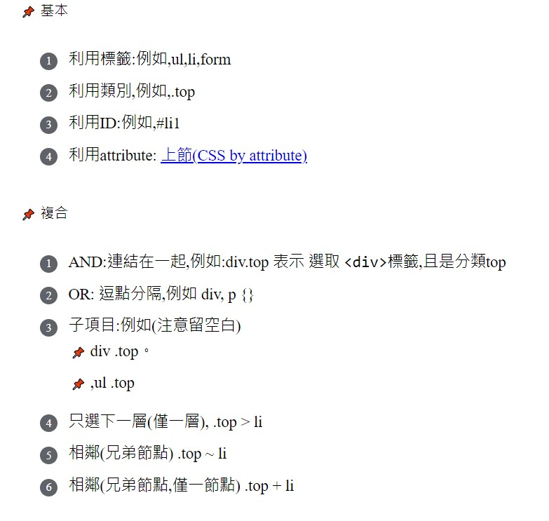

修正為下列的樣子

基本
利用標籤:例如,ul,li,form
利用類別,例如,.top
利用ID:例如,#li1
利用attribute:
上節(CSS by attribute)
複合
AND:連結在一起,例如:div.top 表示 選取
<div>
標籤,且是分類top
OR: 逗點分隔,例如 div, p {}
子項目:例如(注意留空白)
div
.top。
,ul
.top
只選下一層(僅一層), .top > li
相鄰(兄弟節點) .top ~ li
相鄰(兄弟節點,僅一節點) .top + li